File: 000000.gt.txt (if the image is defective, simply delete all Arabic text and the line will be excluded)
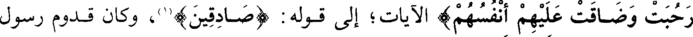
رحبت وضاقت عليهم أنفسهم ) الآيات؛ إلى قولهم (صادقين)(1)، وكان قدوم رسول
File: 000001.gt.txt (if the image is defective, simply delete all Arabic text and the line will be excluded)
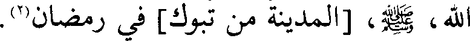
الله ، صعلم، [المدينة من تبوك] في رمضان(2).
File: 000002.gt.txt (if the image is defective, simply delete all Arabic text and the line will be excluded)
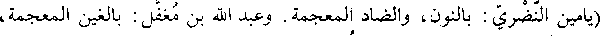
(يامين النضري: بالنون، والضاد المعجمة. وعبد الله بن مغفل: بالغين المعجمة،
File: 000003.gt.txt (if the image is defective, simply delete all Arabic text and the line will be excluded)
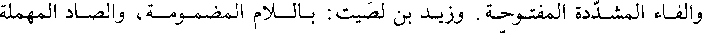
والفاء المفتوحة. وزيد بن لصيت: بالـلام المضمـومـة والصـاد المهملة
File: 000004.gt.txt (if the image is defective, simply delete all Arabic text and the line will be excluded)
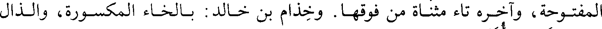
المفتوحة، وآخره تاء مثناة من فوقها. وخذام بن خالد: بالخاء المكسورة، والذال
File: 000005.gt.txt (if the image is defective, simply delete all Arabic text and the line will be excluded)
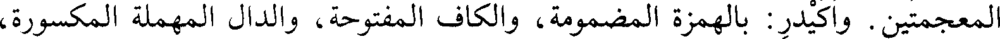
المعجمتين. واكيدر: بالهمزة المضمومة، والكاف المفتوحة، والدال المهملة المكسورة،
File: 000006.gt.txt (if the image is defective, simply delete all Arabic text and the line will be excluded)
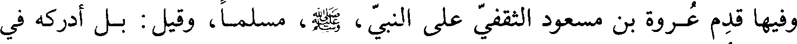
File: 000007.gt.txt (if the image is defective, simply delete all Arabic text and the line will be excluded)
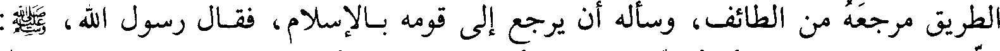
الطريق مرجعه من الطائف، وسأله أن يرجع إلى قومه بالإسلام، فقال رسول الله، صعلم:
File: 000008.gt.txt (if the image is defective, simply delete all Arabic text and the line will be excluded)
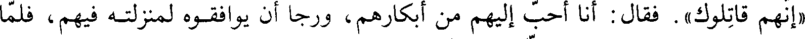
«إنهم قاتلوك». فقال: أنا أحب إليهم من أبكارهم، ورجا أن يوافقوه لمنزلته فيهم، فلما
File: 000009.gt.txt (if the image is defective, simply delete all Arabic text and the line will be excluded)
رجع إلى الطائف صعد إلى علية له، وأشرف منها عليهم، وأظهر الإسلام ودعاهم إليه،
File: 000010.gt.txt (if the image is defective, simply delete all Arabic text and the line will be excluded)
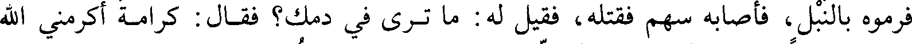
فرموه بالنبل، فأصابه سهم فقتله، فقيل له: ما ترى في دمك؟ فقال: كرامة أكرمني الله
File: 000011.gt.txt (if the image is defective, simply delete all Arabic text and the line will be excluded)
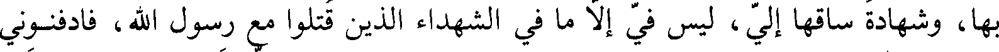
بها، وشهادة ساقها إلي، ليس في إلا ما في الشهداء الذين قتلوا مع رسول الله، فادفنوني
File: 000012.gt.txt (if the image is defective, simply delete all Arabic text and the line will be excluded)
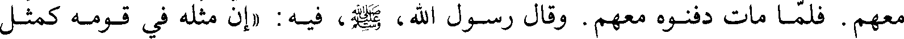
معهم. فلما مات دفنوه معهم. وقال رسول الله، صعلم، فيه: «إن مثله في قومه كمثل
File: 000013.gt.txt (if the image is defective, simply delete all Arabic text and the line will be excluded)
ذكر قدوم وفد ثقيف
File: 000014.gt.txt (if the image is defective, simply delete all Arabic text and the line will be excluded)
صاحب يس في قومه»(3).
File: 000015.gt.txt (if the image is defective, simply delete all Arabic text and the line will be excluded)
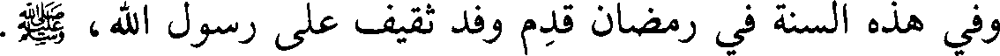
وفي هذه السنة في رمضان قدم وفد ثقيف على رسول الله، صعلم.
File: 000016.gt.txt (if the image is defective, simply delete all Arabic text and the line will be excluded)
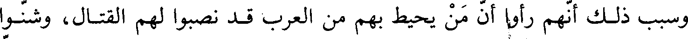
وسبب ذلك أنهم رأوا أن من يحيط بهم من العرب قد نصبوا لهم القتال، وشنوا
File: 000017.gt.txt (if the image is defective, simply delete all Arabic text and the line will be excluded)
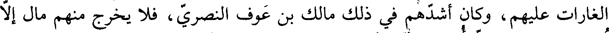
الغارات عليهم، وكان أشدهم في ذلك مالك بن عوف النصري، فلا يخرج منهم مال إلا
File: 000018.gt.txt (if the image is defective, simply delete all Arabic text and the line will be excluded)
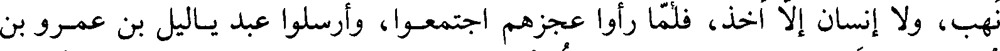
نهب، ولا إنسان إلا اخذ، فلما رأوا عجزهم اجتمعوا، وأرسلوا عبد ياليل بن عمرو بن
File: 000019.gt.txt (if the image is defective, simply delete all Arabic text and the line will be excluded)
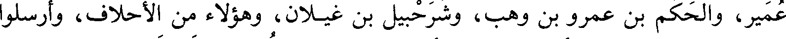
عمير، والحكم بن عمرو بن وهب، وشرحبيل بن غيلان، وهؤلاء من الأحلاف، وأرسلوا
File: 000020.gt.txt (if the image is defective, simply delete all Arabic text and the line will be excluded)
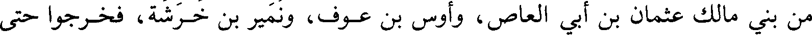
من بني مالك عثمان بن أبي العاص، وأوس بن عوف، ونمير بن خرشة، فخرجوا حتى
File: 000021.gt.txt (if the image is defective, simply delete all Arabic text and the line will be excluded)
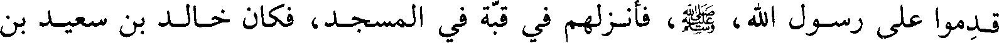
قدموا على رسول الله، صعلم، فأنزلهم في قبة في المسجد، فكان خالد بن سعيد بن
File: 000022.gt.txt (if the image is defective, simply delete all Arabic text and the line will be excluded)
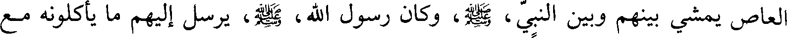
العاص يمشي بينهم وبين النبي، صعلم، وكان رسول الله، صعلم، يرسل إليهم ما يأكلونه مع
File: 000023.gt.txt (if the image is defective, simply delete all Arabic text and the line will be excluded)
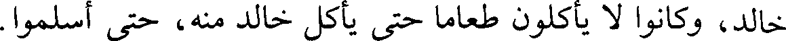
خالد، وكانوا لا يأكلون طعاما حتى يأكل خالد منه، حتى أسلموا.
File: 000024.gt.txt (if the image is defective, simply delete all Arabic text and the line will be excluded)
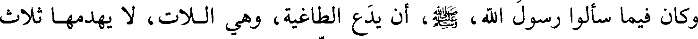
وكان فيما سألوا رسول الله، صعلم، أن يدع الطاغية، وهي اللات، لا يهدمها ثلاث
File: 000025.gt.txt (if the image is defective, simply delete all Arabic text and the line will be excluded)
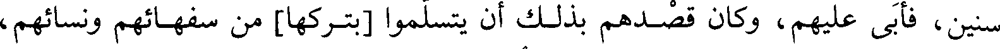
سنين، فأبى عليهم، وكان قصدهم بذلك أن يتسلموا [بتركها] من سفهائهم ونسائهم،
File: 000026.gt.txt (if the image is defective, simply delete all Arabic text and the line will be excluded)
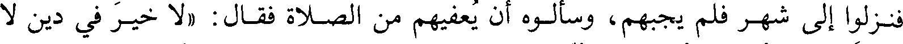
فنزلوا إلى شهر فلم يجبهم، وسألوه أن يعفيهم من الصلاة فقال: «لا خير في دين لا
File: 000027.gt.txt (if the image is defective, simply delete all Arabic text and the line will be excluded)
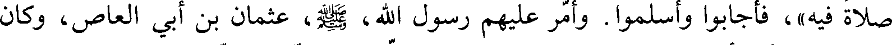
صلاة فيه»، فأجابوا وأسلموا. وأمر عليهم رسول الله، صعلم، عثمان بن أبي العاص، وكان
File: 000028.gt.txt (if the image is defective, simply delete all Arabic text and the line will be excluded)
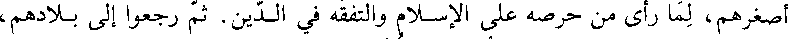
أصغرهم، لما رأى من حرصه على الإسلام والتفقه في الدين. ثم رجعوا إلى بلادهم،
File: 000029.gt.txt (if the image is defective, simply delete all Arabic text and the line will be excluded)
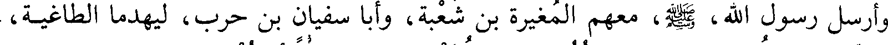
وأرسل رسول الله، صعلم، معهم المغيرة بن شعبة، وأبا سفيان بن حرب، ليهدما الطاغية،
To Save: `Ctrl+s`, make sure to choose `Webpage, complete`!